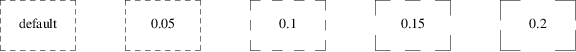
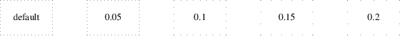
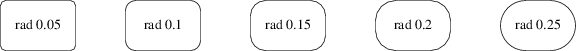
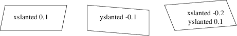
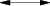
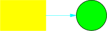

All pic implementations support the following font-styling escapes within text objects:
|
\fR, \f1 |
Set Roman style (the default)
|
\fI, \f2 |
Set Italic style
|
\fB, \f3 |
Set Bold style
|
\fP |
Revert to previous style; only works one level deep, does not stack.
In the pic implementations that are preprocessors for a toolchain that include [gtn]roff, text objects may also contain [gtn]roff vertical- and horizontal-motion escapes such as \h or \v. Troff special glyphs are also available. All \-escapes will be passed through to the postprocessing stage and have their normal effects. The base font family is set by the [gtn]roff environment at the time the picture is rendered.
pic2plot replaces [gtn]roff horizontal- and vertical-motion escapes with \-escapes of its own. Troff special glyphs are not available, but in most back ends Latin-1 special characters and a square-root radical will be. See the pic2plot documentation for full details.
We’ve already seen that the modifier dashed can change the line style of an object from solid to dashed. GNU gpic permits you to dot or dash ellipses, circles, and arcs (and splines in TeX mode only); some versions of DWB may only permit dashing of lines and boxes. It’s possible to change the dash interval by specifying a number after the modifier.

Figure 6-1: Dashed objects
Another available qualifier is dotted. GNU gpic permits you to dot or dash ellipses, circles, and arcs (and splines in TeX mode only); some versions of DWB may only permit dashing of lines and boxes. It too can be suffixed with a number to specify the interval between dots:

Figure 6-2: Dotted objects
It is also possible, in GNU gpic only, to modify a box so it has rounded corners:

Figure 6-3: box rad with increasing radius values
Radius values higher than half the minimum box dimension are silently truncated to that value.
GNU gpic supports slanted boxes:

Figure 6-4: Various slanted boxes.
The xslanted and yslanted attributes specify the x and y offset, respectively, of the box’s upper right corner from its default position.
Lines and arcs can be decorated as well. Any line or arc (and any spline as well) can be decorated with arrowheads by adding one or more as modifiers:

Figure 6-5: Double-headed line made with line <- ->
In fact, the arrow command is just shorthand for line ->. And there is a double-head modifier <->, so the figure above could have been made with line <->.
Arrowheads have a width attribute, the distance across the rear; and a height attribute, the length of the arrowhead along the shaft.
Arrowhead style is controlled by the style variable arrowhead. The DWB and GNU versions interpret it differently. DWB defaults to open arrowheads and an arrowhead value of 2; the Kernighan paper says a value of 7 makes solid arrowheads. GNU gpic defaults to solid arrowheads and an arrowhead value of 1; a value of 0 produces open arrowheads. Note that solid arrowheads are always filled with the current outline color.
It’s also possible to change the line thickness of an object (this is a GNU extension, DWB pic doesn’t support it). The default thickness of the lines used to draw objects is controlled by the linethick variable. This gives the thickness of lines in points. A negative value means use the default thickness: in TeX output mode, this means use a thickness of 8 milliinches; in TeX output mode with the -c option, this means use the line thickness specified by .ps lines; in troff output mode, this means use a thickness proportional to the pointsize. A zero value means draw the thinnest possible line supported by the output device. Initially it has a value of -1. There is also a thickness attribute (which can be abbreviated to thick). For example, circle thickness 1.5 would draw a circle using a line with a thickness of 1.5 points. The thickness of lines is not affected by the value of the scale variable, nor by any width or height given in the .PS line.
The modifier invis[ible] makes an object entirely invisible. This used to be useful for positioning text in an invisible object that is properly joined to neighboring ones. Newer DWB versions and GNU pic treat stand-alone text in exactly this way.
It is possible to fill boxes, circles, and ellipses. The modifier fill[ed] accomplishes this. You can suffix it with a fill value; the default is given by the style variable fillval.
DWB pic and gpic have opposite conventions for fill values and different defaults. DWB fillval defaults to 0.3 and smaller values are darker; GNU fillval uses 0 for white and 1 for black.
Figure 6-6: circle fill; move; circle fill 0.4; move; circle fill 0.9;
GNU gpic makes some additional guarantees. A fill value greater than 1 can also be used: this means fill with the shade of gray that is currently being used for text and lines. Normally this is black, but output devices may provide a mechanism for changing this. The invisible attribute does not affect the filling of objects. Any text associated with a filled object is added after the object has been filled, so that the text is not obscured by the filling.
The closed-object modifier solid is equivalent to fill with the darkest fill value (DWB pic had this capability but mentioned it only in a reference section).
As a GNU extension, three additional modifiers are available to specify colored objects. outline sets the color of the outline, shaded the fill color, and color sets both. All three keywords expect a suffix specifying the color. Example:

Figure 6-7: box color "yellow"; arrow color "cyan"; circle shaded "green" outline "black";
Alternative spellings are colour, colored, coloured, and outlined.
Predefined color names for [gtn]roff-based pic implementations are defined in the device macro files, for example ps.tmac; additional colors can be defined with the .defcolor request (see the manual page of GNU troff(1) for more details). Currently, color support is not available at all in TeX mode.
The pic2plot(1) carries with its own set of color names, essentially those recognized by the X window system with “grey” accepted as a variant of “gray”.
pic assumes that at the beginning of a picture both glyph and fill color are set to the default value.